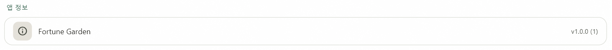
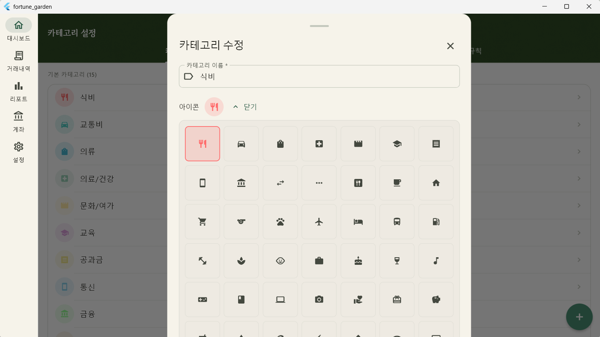

Completed Tasks
01. 완료된 작업
1.1. ProfileUseCase.upsert() 생성일 손실 버그 수정
기존 upsert() 로직이 수정 시에도
createdAt을 현재 시각으로 덮어쓰는 문제를 해결했습니다.
기존 데이터를 선조회하여 생성일 존재 여부를 판단하도록 개선했습니다.
// 수정 후: 기존 프로필 조회 로직 추가 Future<void> upsert({ ... }) async { final existing = await _profileRepo.getById(id); final createdAt = existing?.createdAt ?? DateTime.now().millisecondsSinceEpoch; return _profileRepo.upsert(ProfilesCompanion( ... createdAt: Value(createdAt), // 기존 값 유지 또는 신규 생성 )); }
1.2. 앱 버전 정보 동적 전환 (package_info_plus)

설정 화면(SCR-010)의 버전 정보를 하드코딩에서 시스템 정보 연동
방식으로 변경하여 pubspec.yaml과의 정합성을
확보했습니다.
-
패키지 도입:
package_info_plus: ^8.0.2적용 -
UI 반영:
v1.0.0 (1)형식으로 버전명과 빌드 번호를 병기 표시
1.3. 카테고리 아이콘 선택 UI 구현

기존에 문자열로만 정의되어 있던 카테고리 아이콘 데이터를 실제 UI에서 선택하고 표시할 수 있도록 시스템을 구축했습니다.
-
아이콘 매핑: Material Icons 이름 문자열과
IconData를 연결하는_kIconMap(50종) 정의. -
_CategoryFormSheet 개선: 아이콘 미리보기
CircleAvatar및 토글형 7열 그리드 피커 추가. -
데이터 영속화: 신규 카테고리 추가 시
icon값이null로 저장되던 문제 해결.
// 아이콘 변환 헬퍼 IconData _iconFromName(String? name) => _kIconMap[name] ?? Icons.circle_outlined;
Pending Issues
02. 미해결 항목 (잔여)
아이콘 UI 구현 완료에 따라 우선순위 항목을 업데이트하였습니다.
| 우선순위 | 항목 | 비고 |
|---|---|---|
| 중간 | 규칙 우선순위 UI 개선 | 드래그 앤 드롭 정렬 검토 |
| 낮음 | 계좌번호 암호화 실구현 | secure_storage + encrypt 연동 |
| 낮음 | 경로 상수화 (Refactoring) | 하드코딩된 라우트 경로 일괄 교체 |
Next Roadmap
03. 향후 일정
아이콘 선택 시스템 안착 이후, 거래 내역 자동 분류 규칙의 우선순위 설정 UI를 개선하여 사용자 편의성을 높일 예정입니다.
Comments